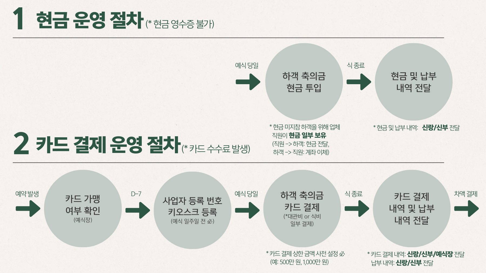

Process
진행 절차
저희 마음 키오스크 이용은 아래와 같은 절차로 진행됩니다.
신랑·신부님의 편안한 결혼식이 될 수 있도록 최선을 다하겠습니다.
예식 전
미리 준비하는 일
-
STEP 1
예약 진행
상담을 통해 예약일을 확정한 후, 예약금을 입금하시면 예약이 확정됩니다.
-
STEP 2
예식장 사전 협의
저희 직원이 예식장에 직접 연락하여 ‘키오스크 설치 위치 및 운영 시간’을 사전 협의합니다.
-
STEP 3 · 예식 2주 전
정산 파일 양식 전달
예식 2주 전, 축의금 정산 양식을 전달드립니다. 미리 축의금을 받으실 때 저희가 제공한 양식을 이용하시면 편하게 축의금을 관리하실 수 있습니다.
예식 당일
저희가 진행하는 일
-
STEP 1 · 예식 1시간 전
키오스크 셋업
예식 시작 1시간 전, 키오스크와 입간판을 예식장에 설치합니다.
-
STEP 2 · 약 1시간 20분
축의금 키오스크 운영
예식 시작 전 40분 ~ 시작 후 40분(약 1시간 20분) 동안 축의금 키오스크를 운영합니다.
※ 예식장 운영 방식에 따라 변경될 수 있습니다. -
STEP 3 · 예식 종료 후
축의금 정산 및 철수
키오스크 운영이 종료되면 사전 협의된 친인척·지인분과 함께 축의금 키오스크를 개봉합니다. 현금 금액과 키오스크 데이터 저장 금액이 일치하는 것을 확인한 후 축의금을 전달드립니다. (서약서 작성 필)
이후 서버에 저장된 축의금 엑셀 파일을 신랑·신부 측에 전달드립니다.
결제 방식
현금 및 카드 결제 운영 절차

카드 결제 운영 시 예식 일주일 전까지 사업자등록번호를 키오스크에 등록해야 하며, 카드로 받은 축의금의 차액 정산은 예식 당일 또는 이후 안내드립니다.